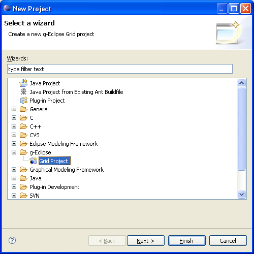
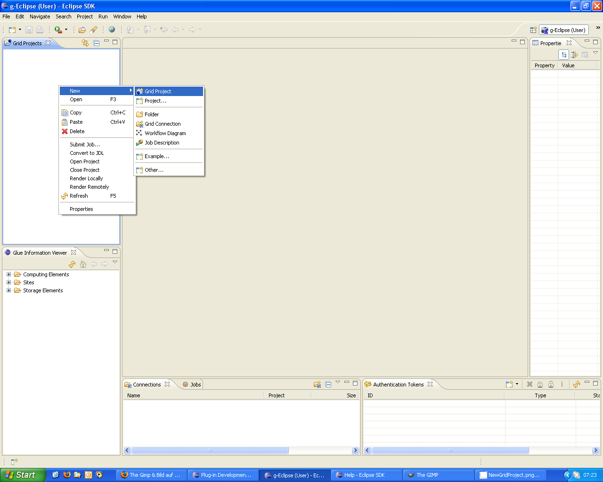
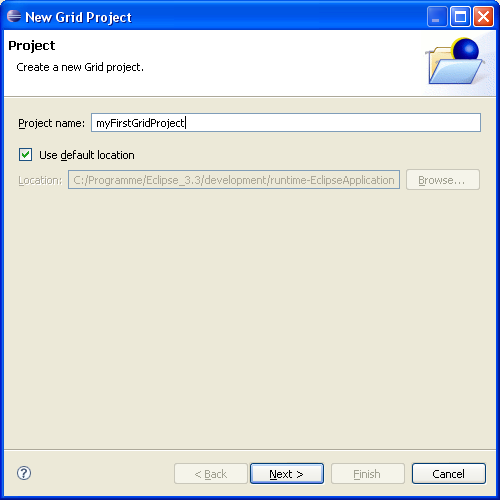
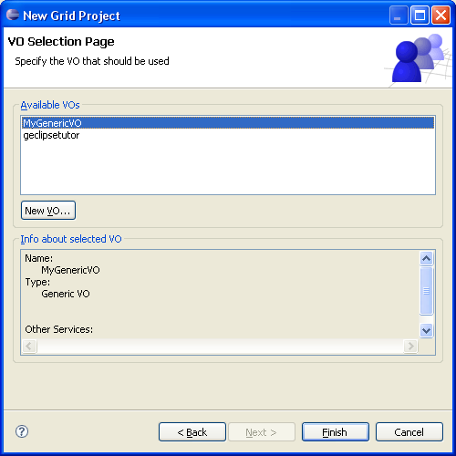
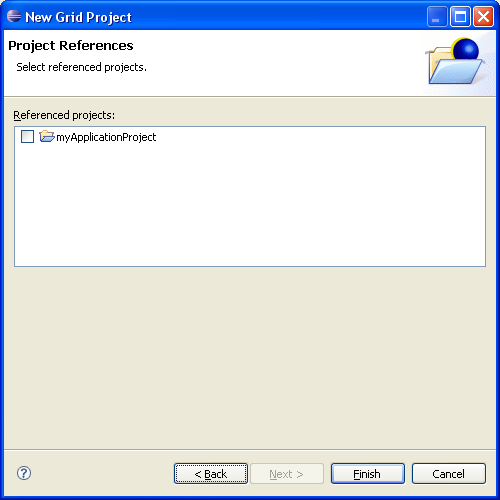

A Grid Project can be seen as a an entity that manages different aspects for Grid users (i.e. computing resources, storage resources, services, applications, Virtual Organizations, etc.). A Grid Project has therefore its own structure as other project types. The different aspects of a Grid projects can be seen by the Grid project view which is a part of the different perspectives of g-Eclipse.
Before a user can create a Grid project, the settings for Virtual Organization needs to be declared with the help of the g-Eclipse preferences pages (see chapter on VO settings).
First you have to start the "Grid Project Wizards" by one of the two following options. You start the Grid Project Creating Wizards with the New Project Wizard by selecting "File --> New... --> Project..." and choose the Grid project under g-Eclipse.
In case you use the Grid Project View already, you can create a Grid Project with the context menu by right-clicking and selecting "New --> Grid Project".
Then the "New Grid Project Wizard" starts and asks for the name of the new Grid Project.
On the next Wizard page, select the Virtual Organization you want to use for the New Grid Project. You can use the "New" Button to create a Virtual Organization as described here
In case you have already other project in your work space, you can assign on of the existing project as an assigned project to the Grid Project. I.e. if you have developed your application as a project within Eclipse and you want to port that application to the Grid, you can assign your application project as a related project to the new Grid project.
Click "Finish" to create the Grid project in your work space. The best way to deal with the Grid Project is with the help of the Grid Project View.